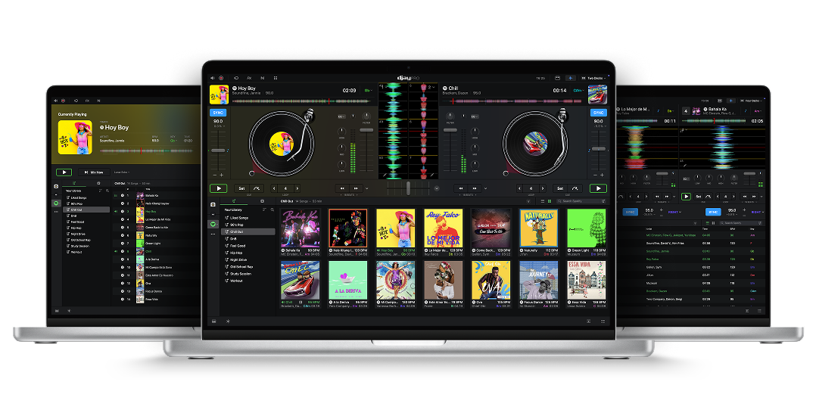
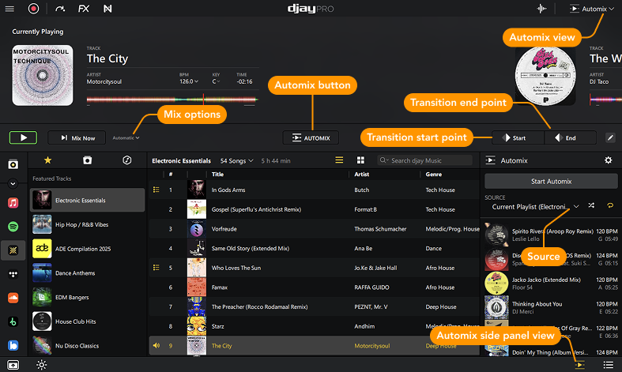

第一次碰打碟软件？djay 五分钟带你从开门到出活
零基础也能上手的 DJ 软件入门指南——从下载安装到第一次混出两段无缝过渡，三个新手最先要碰的功能一次讲清
这篇能带你从完全不懂到用起来，不需要任何基础——连什么是 BPM 都不用知道，跟着做就行。
它到底是干嘛的
普通播放器是"外卖"——一份歌从头到尾给你，你只有"下一首"一个按钮。djay 是"音乐厨房"：同一首歌可以把人声、鼓点、伴奏单独拎出来调，两首歌之间可以丝滑拼起来，还能同时在耳机里偷偷听下一首、观众听不到。
核心就一点：两路输出。一路接主音箱给大家听，一路接耳机给自己偷偷预听（这叫"预监听"）。在耳机里把下一首的节奏对齐了、切点选好了，然后一下推给观众——这就是 DJ 干的活儿。djay 把这件事从专业俱乐部搬到了笔记本、手机、甚至 Vision Pro 里。
它的官网上列着完整的六端支持列表——从 Mac、Windows 到 iOS、Android、Vision Pro、Meta Quest，六端全覆盖。一个账号通吃所有平台，PRO 订阅也跨平台解锁。对新手来说的好消息是：功能虽多，但免费版已经能让你完整跑通一遍混音流程，连 DJ 控制器都不用买，拿笔记本和耳机就能开始。
五分钟上手
最短路径，一步一步：
- 从官方下载安装包，装完直接打开。Mac 版走 App Store，Windows 版从官网下，手机版各平台商店搜"djay"就能找到。
- 第一次打开会弹出音频设备选择——如果你还没接 DJ 控制器，选电脑内置声卡就行。Windows 用户注意：进设置把音频切换到 WASAPI Exclusive 模式（独占声卡、降低延迟），缓冲区先设 256 samples。Mac 用户不用调，系统自动走最低延迟路径。
- 导入你的歌——左边媒体库面板直接把文件夹拖进去，或者连 Spotify / Apple Music 流媒体账号。
- 拖两首歌到下方两个"甲板"（Deck），各点一下 Play，两边的波形就跑起来了。
- 中间那个横条叫 Crossfader（推子），往左推 Deck 1、往右推 Deck 2，推过去的那一刻就是在"切歌"。
到这一步，你已经完成了人生第一次打碟。别担心没对齐——djay 有 Beatgrid（自动节拍检测），默认帮你把两首歌的节拍线对齐，新手第一次切出无缝过渡不是难事。

上手后先玩这三个功能
跑通一遍之后，别着急钻研高级参数——先碰这三个，每碰一个都会有"原来还能这样"的惊喜。
一、Automix 自动混音：让 AI 帮你干活
设置里搜"派对模式"，开一下。djay 会自动做三件事：AI 匹配下一首歌（按 BPM、风格、调式找最搭的）、自动帮你过渡（每次用不同的过渡效果）、能量策略（前两小时暖场、中间高潮、后两小时降温）。
你会看到什么：点完"派对模式"，队列里的歌开始一首接一首自动续上，每首之间有各种过渡——Filter Sweep、Echo Out/In、Neural Mix Fusion……像是有人在替你打碟。
这意味着什么：派对上你可以去端蛋糕、去合影，djay 能连续混 4-8 小时不用碰。前提是你的歌库够"耐用"——纯暖场至少 30 首，暖场加高潮至少 100 首。不够就连 Spotify / Apple Music 流媒体，曲库自动补上。

二、Neural Mix 实时分轨：把一首歌拆成三份
点一下界面上 Neural Mix 的开关，波形会变成三色：🔵 人声、🟠 鼓点、🟢 伴奏。每一路都有独立的音量推杆。
你会看到什么：比如一首流行歌，你把人声推子拉下来，立刻变成了伴奏卡拉 OK；再把鼓点推上去，副歌瞬间变得更炸。三首歌在你手里变成了无限种可能的积木。
这意味着什么：别人还在按整个文件切歌，你已经可以在过渡时只混人声、或者只混鼓点——这是从"播放器"到"DJ"的质变。Mac 上 Apple Silicon 的 Neural Engine 硬件加速，基本零延迟；Windows 和移动端也都支持，只是 CPU 压力大一点时需要调大缓冲区，具体参数可以去djay文档里查。
三、音频路由分轨：主音箱和耳机各走各的
设置 → 音频 → 打开 Split Output。没外接声卡也能体验：Mac 自动把主输出给内置扬声器、监听给耳机插孔；Windows 需要装一个 VB-Audio Virtual Cable 这类免费虚拟声卡把一路拆两路；手机更简单——扬声器出主音、蓝牙耳机自动当监听。
你会看到什么：主音箱正在放 A 面，你耳机里偷偷把 B 面的节奏对齐了、Cue 点选好了，然后一把 Crossfader 推过去——观众听起来就是无缝切换，完全没察觉你在背后做了多少事。
这意味着什么：这是 DJ 的核心技能。没有分轨的话，你只能"盲切"——跟着感觉推 Crossfader，切歪了观众直接听见脱节。有了预监听，你在耳机里确认好再推，稳得一批。
小白的三个常见疑问
问：只有笔记本内置声卡能玩吗？
能玩，只是有条件。Mac 原生支持多输出流，直接就能主输出给扬声器、监听给耳机插孔；Windows 内置声卡默认只有一路，装个免费的虚拟声卡（VB-Audio Virtual Cable）把一路拆两路就行。如果以后想上 DJ 控制器（Pioneer DDJ-FLX4、Reloop Buddy、Numark MixTrack Go 这些都是入门款），djay 插上会自动配置好主输出和监听输出，零手动操作。
问：按下 Play 有 1 秒延迟好难受？
音频延迟超过 20ms 就会明显感觉"按了没反应"，DJ 场景要求低于 10ms。最有效的一招：Windows 用户切到 WASAPI Exclusive 模式（设置 → 音频 → 设备配置 → 使用模式选 WASAPI Exclusive），缓冲区调 256 samples，不行就 128。Mac、iOS、Android 自动走系统最低延迟 API，一般不用手动调。另外别同时开吃 CPU 的渲染/压缩软件，CPU 跟不上也会导致缓冲变大。
问：想让 djay 自己连续播一整晚？
三件事要做：开派对模式（已经说过）、让系统别休眠、歌库够耐用。桌面端：Mac 系统设置里开"防止自动睡眠"，Windows 电源设置选"从不睡眠"，djay 设置里开"启动时恢复上次会话"。移动端：屏幕常亮设为永不、一直插在充电上、开勿扰模式。派对模式下 AI 会自动保证不重复同一首歌直到过了 40 首——100 首歌库大概 41 首开始重复，300 首歌库 8 小时完全不重复。想更严格？在 Automix 设置里开"防止重复"。
进阶方向
跑通上面三个功能之后，下一步推荐去翻 djay 文档里的视频混音章节——20 多种视频过渡效果、四层叠层系统（Logo、文字、实时波形、动态特效），把你的打碟画面同步投到外接显示器上，观众体验直接上一个台阶。或者也可以去看看 DVS 数字黑胶系统的玩法，用实体黑胶控制器来打碟，手感会完全不一样。
djay 横跨桌面、移动、空间计算六端，一套工具从入门到专业都能覆盖。以上只是开头那 10%，剩下的 90% 里有更多好玩的东西等着慢慢发掘。
喜欢存本地备份的可以去GitHub、Gitee、GitCode三个仓库拉原始文档，按分类目录找就能定位到 djay 相关的全部资料，国内优先从 Gitee 或 GitCode 访问速度快很多。